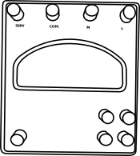

Performance Characteristics of Centrifugal Pump
Objective
To conduct the performance test on centrifugal pump and to plot the operating characteristics.
Apparatus used:
Centrifugal Pump Setup, Wattmeter, Tachometer, V-notch setup, Hook Gauge, Measuring Scale.
Description Impeller: The energy is transferred from the shaft to the impeller and from the impeller to the water. There are three types of impellers, based on the number of shrouds.
Start the pump by pressing the start button.
Description Tachometer: is a sensor device used to measure the rotation speed of an object such as the engine shaft in a car, and is usually restricted to mechanical or electrical instruments. This device indicates the revolutions per minute (RPM) performed by the object.
Rotate the handle to set the speed of motor to be constant and check the speed using tachometer.
Description Total Static Head: is a term primarily used in hydraulics to denote the static pressure in a pipe, channel, or duct flow.Static Discharge Head: The vertical distance from the pump outlet to the point of discharge.
Speed of Motor = ____ rpm
Open the delivery valve and allow the water to flow in the channel. Take the hook guage reading at the V-notch before and after valve opening to find the discharge.
Initial reading (water level till crest) = ____ cm
Final reading = ____ cm
Head of water = ____ cm
Actual discharge Qact =______m3/sec
Qact (cm3/sec) = 14.17 × h(5/2)


Formula Description Qact = Area of the Collecting tank x (hw/t) in m3/s
Where
hw = 5cm rise of water level in the collecting tank
t = time taken for 5cm rise of water level in the collecting tank
Note the delivery pressure reading for the corresponding discharge.
Delivery Head = ____ kg/cm2
Delivery Head = ____ m
Take the suction head pressure reading corresponding to the discharge.
Suction Head = ____ kg/cm2
Suction Head = ____ m
z = 43 cm
H (m)= Hd+Hs+z
Formula Description Z = difference between suction head and delivery head /correction head
H = Total Head
Note the watt meter reading corresponding to the discharge.
Wattmeter Reading (WR)= ____ Watt
Observation
Description Efficiency: is defined as a level of performance that uses the lowest amount of inputs to create the greatest amount of outputs.The Actual Discharge of an Axial Piston Pump: is usually defined as the difference between the theoretical pump discharge and the total leakage.
Input Power: is the power, which is required by the appliance at its input i.e., from the plug point.
Output Power: is the power available at a specified output of a device under specified conditions of operation.
Wattmeter Reading (WR) =
Actual Discharge (Qact) =
Total Head (H) =
Result
- Wc: Wattmeter Constant = 2W
- Np: Number of phase = 3
- ηm: Efficiency of motor = 0.8
- γ: Specific Weight of water = 9810N/m3
Input power =
Input Power (W) = WR × Wc × ηm × NpOutput power =
Output Power (W) = γ × Qact × HEfficiency =
η (%) = Output Power⁄Input Power× 100Repeat the procedure until the discharge is reduced to zero.
PERFORMANCE CHARACTERISTICS CURVES
Trial =
Both ends of the pipe must be trimmed to ensure parallel faces.